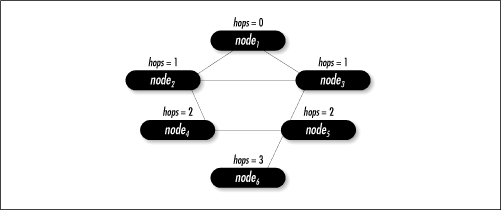

11.4 Graph Example: Counting
Network Hops
Graphs play an important part in solving
many networking problems. One
problem, for example, is determining the best way to get from
one node to another in an internet, a network of gateways into
other networks. One way to model an
internet is using an undirected graph in which vertices
represent nodes, and edges represent connections between the
nodes. With this model, we can use breadth-first search to help
determine the smallest number of traversals, or hops, between various nodes.
For example, consider the graph in Figure
11.8, which represents an internet of six nodes. Starting
at node1, there is more than one way we can reach node4. The
paths 〈node1, node2, node4〉, 〈node1, node3, node2, node4〉, and
〈node1, node3, node5, node4〉 are all acceptable. Breadth-first
search determines the shortest path, 〈node1, node2, node4〉,
which requires two hops.

This example presents a function, bfs
(see Examples Example
11.3 and Example
11.4), that implements breadth-first search. It is used
here to determine the smallest number of hops between nodes in
an internet. The function has three arguments:
graph is a graph, which in this problem
represents the internet; start is the vertex
representing the starting point; and hops is
the list of hop counts that is returned. The function modifies
graph, so a copy should be made before calling
the function, if necessary. Also, vertices returned in
hops are pointers to the actual vertices from
graph, so the caller must ensure that the
storage in graph remains valid as long as
hops is being accessed. Each vertex in
graph is a BfsVertex structure (see Example
11.3), which has three members: data is a
pointer to the data associated with the vertex,
color maintains the color of the vertex during
the search, and hops maintains the number of
hops to the vertex from the start node. The
match function for graph,
which is set by the caller when initializing the graph with
graph_init, should compare only
the data members of
BfsVertex
structures.
The bfs
function performs breadth-first search as described earlier in
this chapter. To keep track of the minimum number of hops to
each vertex, we set the hop count of each vertex to the hop
count of the vertex to which it is adjacent plus 1. We do this
for each vertex as we discover it, and color it gray. Colors
and hop counts for each vertex are maintained by the
BfsVertex structures in the list of
adjacency-list structures. At the end, we load
hops with all vertices whose hop counts are
not -1. These are the vertices that were reachable from the
start node.
The runtime complexity of bfs is O (V +
E ), where V is the number of vertices in the
graph and E is the number of
edges. This is because initializing the colors of the vertices
and ensuring that the start node exists both run in O (V )
time, the loop in which the breadth-first search is performed
in O (V + E
) time, and loading the list of hop counts is O (V
).
Example 11.3.
Header for Breadth-First Search /*****************************************************************************
* *
* --------------------------------- bfs.h -------------------------------- *
* *
*****************************************************************************/
#ifndef BFS_H
#define BFS_H
#include "graph.h"
#include "list.h"
/*****************************************************************************
* *
* Define a structure for vertices in a breadth-first search. *
* *
*****************************************************************************/
typedef struct BfsVertex_ {
void *data;
VertexColor color;
int hops;
} BfsVertex;
/*****************************************************************************
* *
* --------------------------- Public Interface --------------------------- *
* *
*****************************************************************************/
int bfs(Graph *graph, BfsVertex *start, List *hops);
#endif
Example 11.4.
Implementation of a Function for Breadth-First Search /*****************************************************************************
* *
* -------------------------------- bfs.c --------------------------------- *
* *
*****************************************************************************/
#include <stdlib.h>
#include "bfs.h"
#include "graph.h"
#include "list.h"
#include "queue.h"
/*****************************************************************************
* *
* --------------------------------- bfs ---------------------------------- *
* *
*****************************************************************************/
int bfs(Graph *graph, BfsVertex *start, List *hops) {
Queue queue;
AdjList *adjlist,
*clr_adjlist;
BfsVertex *clr_vertex,
*adj_vertex;
ListElmt *element,
*member;
/*****************************************************************************
* *
* Initialize all of the vertices in the graph. *
* *
*****************************************************************************/
for (element = list_head(&graph_adjlists(graph)); element != NULL; element =
list_next(element)) {
clr_vertex = ((AdjList *)list_data(element))->vertex;
if (graph->match(clr_vertex, start)) {
/***********************************************************************
* *
* Initialize the start vertex. *
* *
***********************************************************************/
clr_vertex->color = gray;
clr_vertex->hops = 0;
}
else {
/***********************************************************************
* *
* Initialize vertices other than the start vertex. *
* *
***********************************************************************/
clr_vertex->color = white;
clr_vertex->hops = -1;
}
}
/*****************************************************************************
* *
* Initialize the queue with the adjacency list of the start vertex. *
* *
*****************************************************************************/
queue_init(&queue, NULL);
if (graph_adjlist(graph, start, &clr_adjlist) != 0) {
queue_destroy(&queue);
return -1;
}
if (queue_enqueue(&queue, clr_adjlist) != 0) {
queue_destroy(&queue);
return -1;
}
/*****************************************************************************
* *
* Perform breadth-first search. *
* *
*****************************************************************************/
while (queue_size(&queue) > 0) {
adjlist = queue_peek(&queue);
/**************************************************************************
* *
* Traverse each vertex in the current adjacency list. *
* *
**************************************************************************/
for (member = list_head(&adjlist->adjacent); member != NULL; member =
list_next(member)) {
adj_vertex = list_data(member);
/***********************************************************************
* *
* Determine the color of the next adjacent vertex. *
* *
***********************************************************************/
if (graph_adjlist(graph, adj_vertex, &clr_adjlist) != 0) {
queue_destroy(&queue);
return -1;
}
clr_vertex = clr_adjlist->vertex;
/***********************************************************************
* *
* Color each white vertex gray and enqueue its adjacency list. *
* *
***********************************************************************/
if (clr_vertex->color == white) {
clr_vertex->color = gray;
clr_vertex->hops = ((BfsVertex *)adjlist->vertex)->hops + 1;
if (queue_enqueue(&queue, clr_adjlist) != 0) {
queue_destroy(&queue);
return -1;
}
}
}
/**************************************************************************
* *
* Dequeue the current adjacency list and color its vertex black. *
* *
**************************************************************************/
if (queue_dequeue(&queue, (void **)&adjlist) == 0) {
((BfsVertex *)adjlist->vertex)->color = black;
}
else {
queue_destroy(&queue);
return -1;
}
}
queue_destroy(&queue);
/*****************************************************************************
* *
* Pass back the hop count for each vertex in a list. *
* *
*****************************************************************************/
list_init(hops, NULL);
for (element = list_head(&graph_adjlists(graph)); element != NULL; element =
list_next(element)) {
/**************************************************************************
* *
* Skip vertices that were not visited (those with hop counts of -1). *
* *
**************************************************************************/
clr_vertex = ((AdjList *)list_data(element))->vertex;
if (clr_vertex->hops != -1) {
if (list_ins_next(hops, list_tail(hops), clr_vertex) != 0) {
list_destroy(hops);
return -1;
}
}
}
return, 0;
}
|